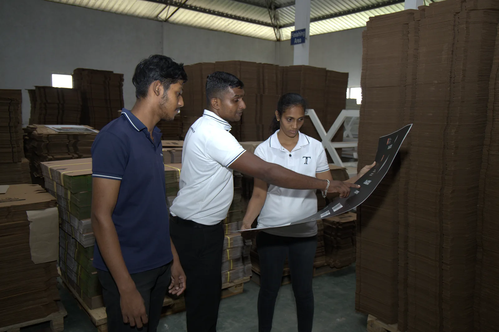
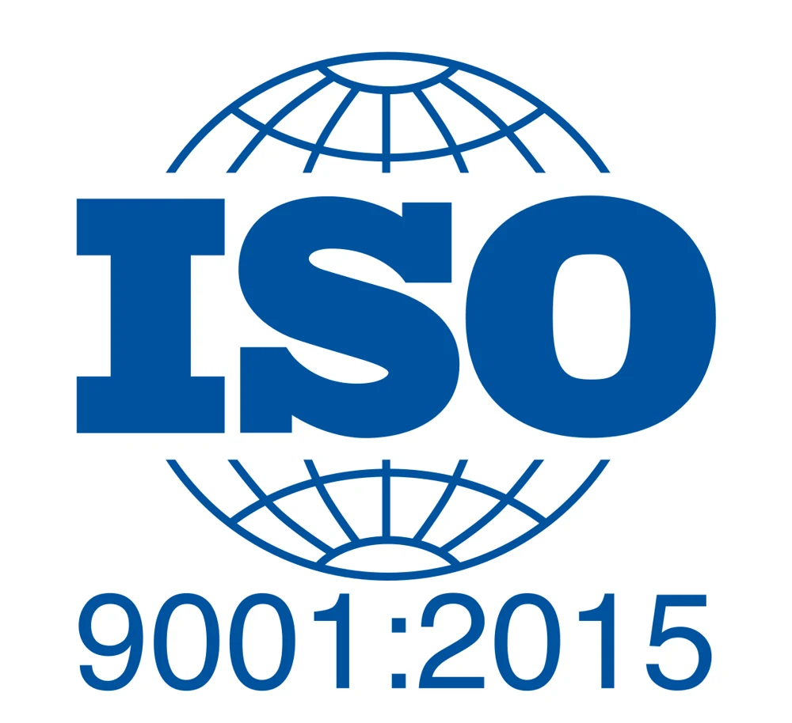
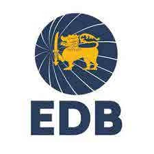

QUALITY & COMPLIANCE
ISO-Certified
Packaging Manufacturing
Quality, innovation and customer service support our value-added corrugated packaging for local and international markets.
Food-Grade Materials
Technical Expertise
Sustainability

OUR QUALITY APPROACH
Quality, Materials and Continuous Improvement
Our company profile identifies strict quality control, continuous improvement and food-grade certified materials as part of our manufacturing approach. Discuss the following specification checkpoints with our team.
- Board & Materials
- Dimensions & Fit
- Artwork & Print
- Structure & Use
- Agreed Specification
Confirm the test methods, tolerances and acceptance criteria required for your particular product and order.
COMPANY PROFILE MARKS
Quality & industry marks
Marks featured in our company profile. Contact our team for current certificates and supporting documentation.




The EDB and Central Environmental Authority logos identify organizations shown in the profile; they are not presented as certification or membership claims.
CERTIFICATIONS & DOCUMENTATION
Certification and
Material Standards
Request the current documents relevant to your packaging, materials and intended use.
Request documentationISO 9001:2015+
Techno Industries is described as an ISO-certified manufacturer in the company profile, which displays ISO 9001:2015. Request the applicable certificate and its scope from our team.
Food-Grade Materials+
The company profile states that food-grade certified materials are used in production. Food-grade boards, produce packaging and food-safe inks are included in the range. Food-grade PVC options are available upon requirement.
Agreed Quality Criteria+
Strict quality control and continuous improvement are stated commitments. Discuss dimensions, structural integrity, artwork and product presentation requirements for your order.
Sustainability+
The company profile includes a commitment to sustainability and lists recycled boxes among its products. Discuss the material choice and any required product-specific documentation with the team.
ISO 9001:2015 and food-grade material statements are presented in the supplied company profile. Contact the team for the applicable certificates, scope and product-specific documentation.